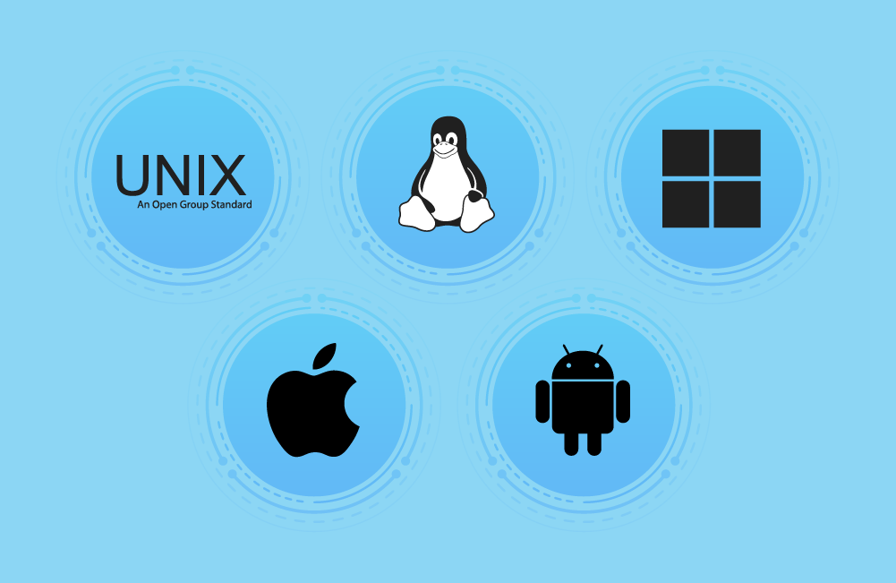

نظام التشغيل هو البرنامج الأساسي الذي يسمح للمستخدم بالتفاعل مع الحاسوب، وبدونه لا يمكن تشغيل الجهاز أو استخدام البرامج. يقوم بإدارة موارد النظام وتوفير بيئة عمل مناسبة.

هو برنامج يعمل كوسيط بين المستخدم والمكونات المادية للحاسوب، ويُشغّل تلقائيًا عند بدء تشغيل الجهاز. يتحكم في تشغيل البرامج وإدارة الملفات والأجهزة.
يقوم نظام التشغيل بعدة مهام أساسية تُمكّن الحاسوب من العمل بكفاءة:
بدون نظام التشغيل لا يمكن للحاسوب فهم أو تنفيذ الأوامر. هو المسؤول عن تنظيم العمل داخل الجهاز ويُعد الأساس الذي تعتمد عليه كل البرامج.
نظام التشغيل هو البرنامج الذي يدير الحاسوب ويوفّر بيئة مناسبة لتشغيل البرامج والتفاعل مع الأجهزة. من أهم وظائفه: إدارة الموارد، تشغيل البرامج، تنظيم الملفات، وتوفير الأمان.